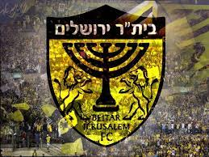

About
Beitar Jerusalem Football Club, commonly known as Beitar Jerusalem or simply as Beitar , is an Israeli football club based in the city of Jerusalem, that plays in the Israeli Premier League, the top tier in Israeli football. The club has traditionally worn kit colours of yellow and black. The team has played its home matches in Teddy Stadium. The stadium is the largest stadium in Israel with a capacity of 31,733. The club is one of the most popular in Israel and is among the Israeli clubs with the highest number of fans in the country. The club was founded in 1936 by Shmuel Kirschstein and David Horn, who chaired the Beitar branch in Jerusalem. Several team members were also part of the outlawed Irgun and Lehi militias closely associated with the right-wing Revisionist Zionism movement. Beitar's fans have become a highly controversial political symbol in Israeli football culture, unofficially aligned with the Revisionist Zionist movement and to the right-wing Likud party.
wikipedia PageThe official website of Beitar Jerusalem Football Club

Israel
Jerusalem
Beit Vagen 19